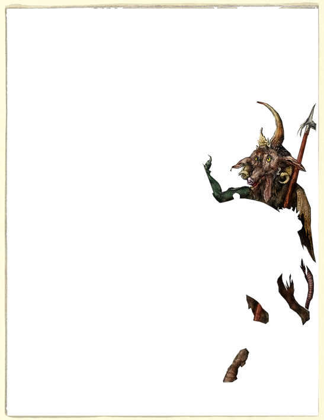
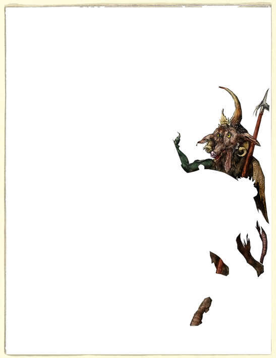
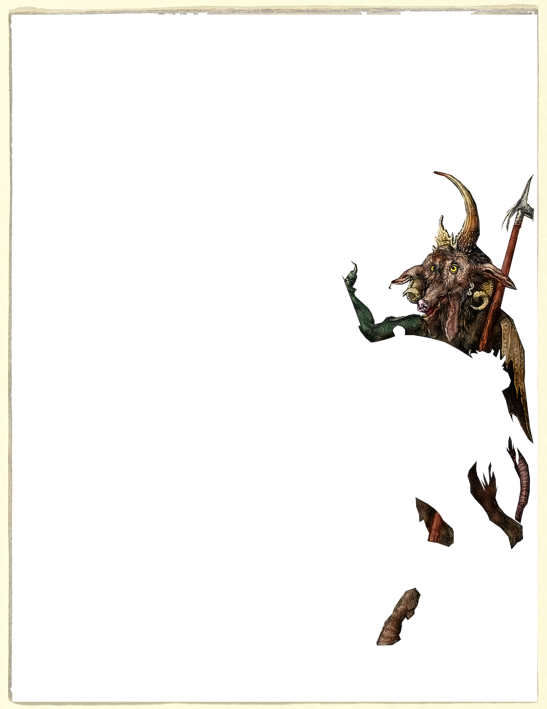

'Code of Honor' by Manuel Ochoa

'Code of Honor' by Manuel Ochoa
Knight, Death and the Devil, 1513, engraving, 24.5 x 19.1 cm Knight, Death and the Devil (German: Ritter, Tod und Teufel) is a large 1513 engraving by the German artist Albrecht Dürer, one of the three Meisterstiche (master prints) completed during a period when he almost ceased to work in paint or woodcuts to focus on engravings. The image is infused with complex iconography and symbolism, the precise meaning of which has been argued over for centuries.
A stolid armoured knight on a proud horse, accompanied by his faithful dog, rides through a wild narrow gorge flanked by a goat-headed devil and the figure of death riding a pale horse. Death's rotting corpse holds an hourglass, a reminder of the shortness of life. The rider moves through the scene looking away from the creatures lurking around him, and appears almost contemptuous of the threats, and is thus often seen as symbol of courage; the knight's armour, the horse which towers in size over the beasts, and the oak leaves are symbolic of the resilience of faith, while the knight's plight may represent Christians' earthly journey towards the Kingdom of Heaven symbolized by the city on the hill.
Both of his two other Meisterstiche (Melencolia I and St. Jerome in His Study ) contain a skull-like object, a dog, and an hourglass, and all three are identical in size. The engraving is heavily indebted to the Gothic style.Many of the forms blend into each other. The outline of the horse is built from a series of interlocking curves, while the knight's chin is woven into the line of his helmet.
These two central figures are surrounded by a tangled mass of branches, harness and hair, which according to art historian Raymond Stites contrast with the relatively solid figure of the knight and his horse to set them as a "tangible idea in a world of changing forms". The man is shown looking doggedly straight ahead; he does not allow his line of vision to be interrupted or distracted by the demons beside him.